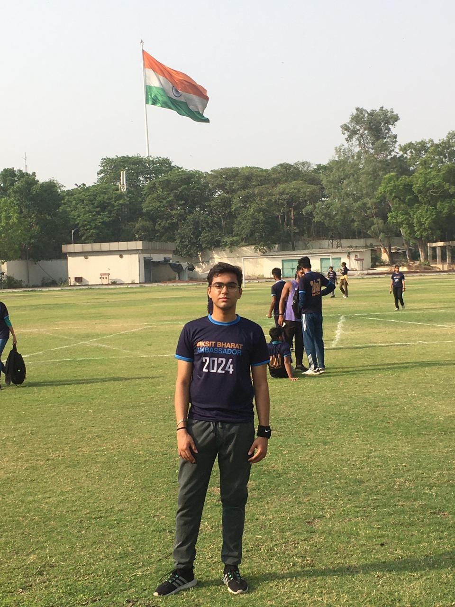
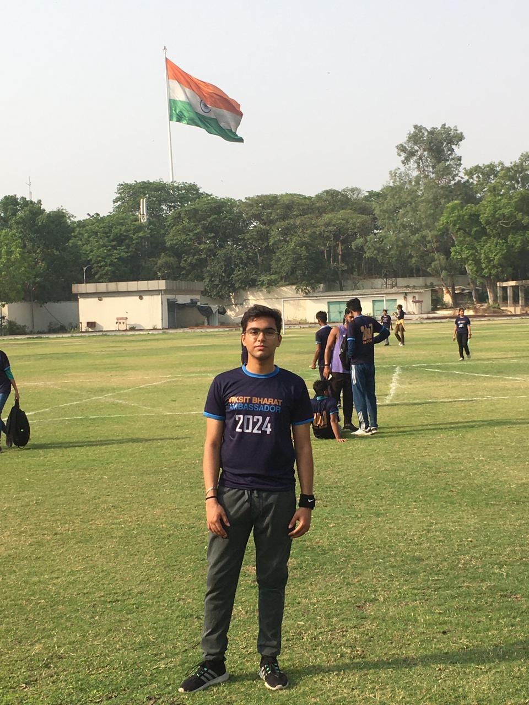
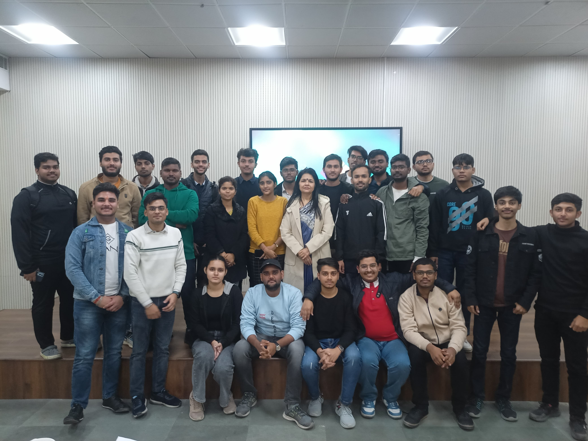
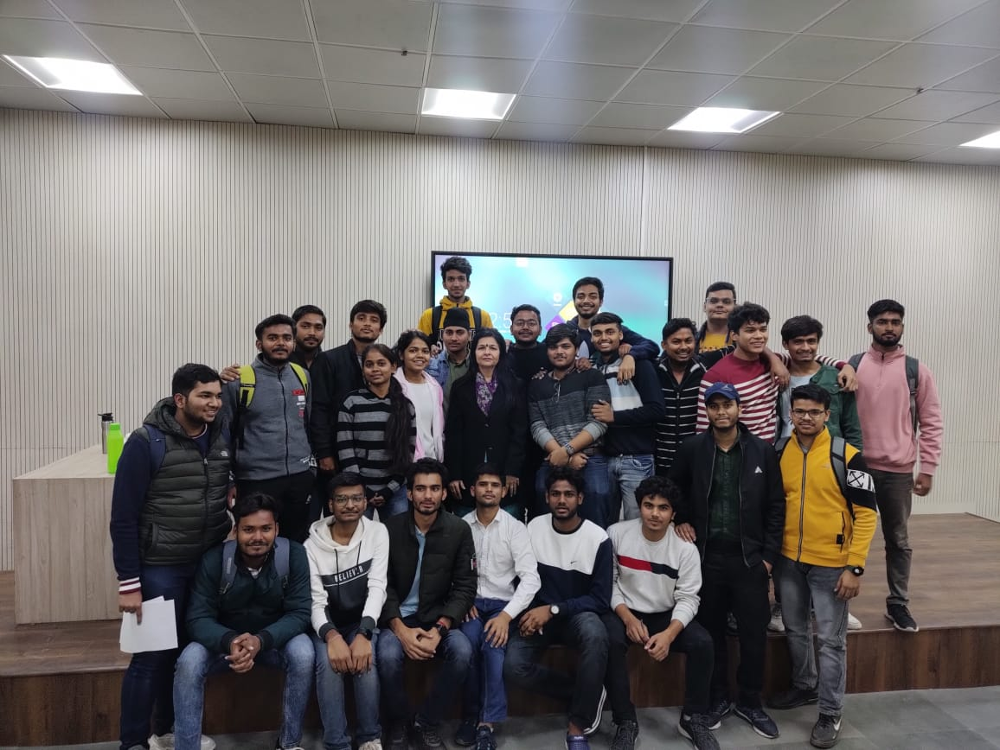
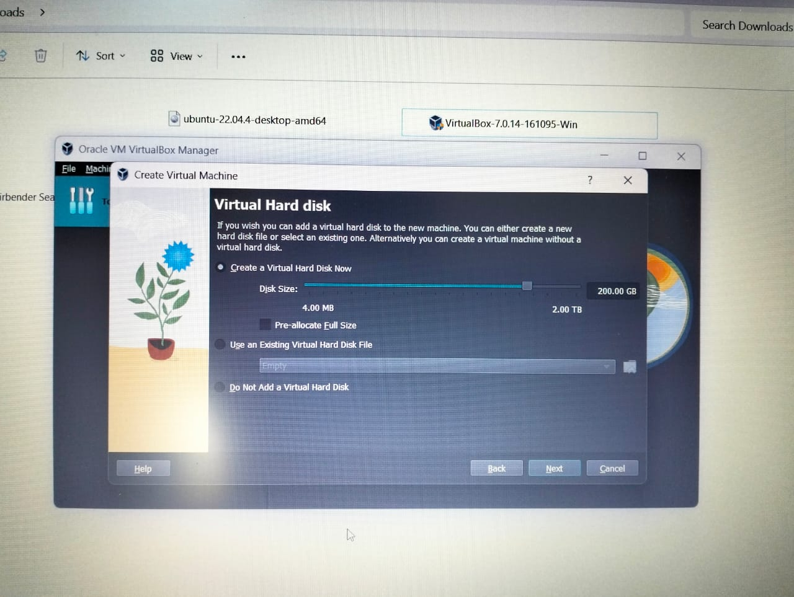
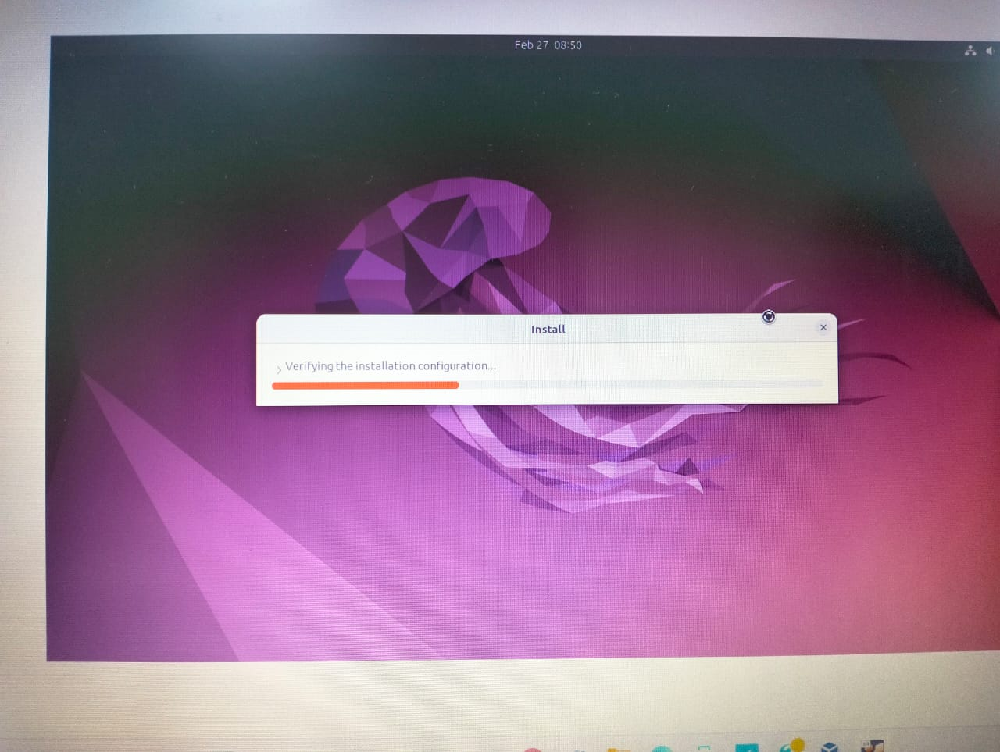
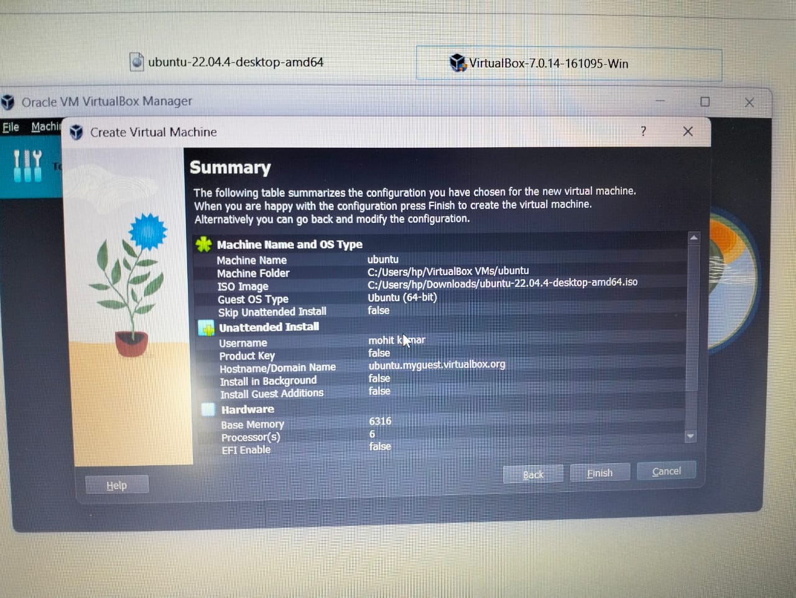

AKARSH JAIN
About Me
Fueled by determination and ambition, I, AKARSH JAIN, etch a path of excellence in all endeavors. With a fervent passion for growth and learning, I embody the essence of perpetual advancement, delving into the depths of knowledge with an insatiable curiosity, eager to unravel new horizons.
My dedication to excellence is evident in every undertaking, leaving an indelible mark of proficiency. As a visionary with a strategic mindset, I navigate challenges with poise and foresight, paving the way for success. My commitment to innovation fosters an environment of creativity, where novel solutions emerge effortlessly. Blending resilience and adaptability, I confront obstacles head-on, emerging stronger and more resolute. My leadership shines brightly, inspiring others to strive for greatness and reach their full potential. Stalwart in the pursuit of excellence, my integrity and diligence serve as pillars of strength in every endeavor. In the tapestry of achievements, my name gleams brightly, a testament to relentless pursuit and unwavering determination.
My Video
Photo Gallery
 

My Projects
|  |
Chatbot DevelopmentBuild a conversational chatbot using natural language processing (NLP) techniques. You can implement it for various purposes such as customer support, FAQ handling, or even as a personal assistant. Use libraries like TensorFlow or PyTorch for NLP tasks and integrate it with platforms like Facebook Messenger or Slack. |
|  |
E-commerce WebsiteCreate a fully functional e-commerce website from scratch. Include features like user authentication, product catalog, shopping cart, payment gateway integration, and order management. You can use frameworks like Django or Flask in Python for backend development and HTML/CSS/JavaScript for frontend design. |
|  |
Data Visualization DashboardDevelop a web-based dashboard for visualizing and analyzing data. Utilize libraries like Matplotlib, Seaborn, or Plotly for data visualization and frameworks like Flask or Dash for web application development. You can use publicly available datasets or collect your own data to create meaningful insights and interactive visualizations. |
|  |
Mobile App DevelopmentDesign and implement a mobile application for a specific purpose or niche. It could be a productivity app, a game, a fitness tracker, or any other idea you find interesting. Choose a platform (iOS or Android) and utilize relevant tools and languages such as Swift for iOS or Kotlin for Android, along with frameworks like Flutter or React Native for cross-platform development. |
|  |
Machine Learning ProjectUndertake a machine learning project to solve a real-world problem or explore a specific domain. You can choose from various domains such as healthcare, finance, or image recognition. Implement algorithms like linear regression, decision trees, or neural networks using libraries like scikit-learn or TensorFlow. Document your project thoroughly, including data preprocessing, model training, evaluation metrics, and potential applications. |
My Résumé
Download My RésuméMy Audio Clip
Contact Me
Mobile No: +91-7078797179
Email: aakrshjain@gmail.com